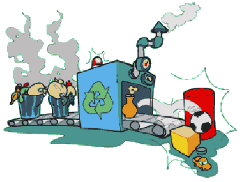

Vantagens da reciclagem
Os resultados da reciclagem são expressivos tanto no campo ambiental, como nos campos econômico e social. No meio-ambiente a reciclagem pode reduzir a acumulação progressiva de lixo a produção de novos materiais, como por exemplo o papel, que exigiria o corte de mais árvores; as emissões de gases como metano e gás carbônico; as agressões ao solo, ar e água; entre outros tantos fatores negativos. No aspecto econômico a reciclagem contribui para a utilização mais racional dos recursos naturais e a reposição daqueles recursos que são passíveis de re-aproveitamento. No âmbito social, a reciclagem não só proporciona melhor qualidade de vida para as pessoas, através das melhorias ambientais, como também tem gerado muitos postos de trabalho e rendimento para pessoas que vivem nas camadas mais pobres. No Brasil existem os carroceiros ou catadores de papel, que vivem da venda de sucatas, papéis, latas de alumínio e outros materiais recicláveis deitados para o lixo. Também trabalham na coleta ou na classificação de materiais para a reciclagem. Como é um serviço penoso, pesado e sujo, não tem grande poder atrativo para as fatias mais qualificadas da população.
